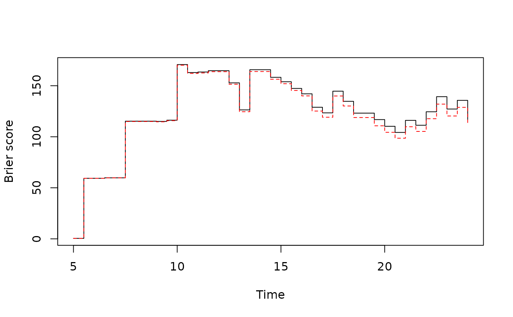
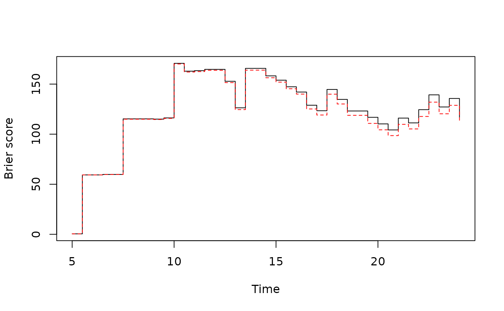

Inference for Brier score for cureit objects
Brier_inference_cureit.RdInference for Brier score for cureit objects
Usage
Brier_inference_bootstrap(object, newdata = NULL, nboot = 100, times, ...)
Brier_inference_cv(object, ncv = 10, times, ...)Arguments
- object
A cureit object.
- newdata
A
base::data.frame()ortibble::tibble()containing all the original predictors used to create x. Defaults toNULL.- nboot
Number of bootstrap resamples to be generated.
- times
Numeric vector of times to obtain survival probability estimates at
- ...
Additional arguments passed to other methods.
- ncv
Number of cross-validation folds.
See also
Other cureit() functions:
broom_methods_cureit,
cureit(),
nomogram(),
predict.cureit()
Examples
trial <- na.omit(trial)
p <- cureit(surv_formula = Surv(ttdeath, death) ~ age,
cure_formula = ~ age,
data = trial)
times = seq(5,24,0.5)
bootbrier <- Brier_inference_bootstrap(p,times=times)
#> [1] 1
#> [1] 2
#> [1] 3
#> [1] 4
#> [1] 5
#> [1] 6
#> [1] 7
#> [1] 8
#> [1] 9
#> [1] 10
#> [1] 11
#> [1] 12
#> [1] 13
#> [1] 14
#> [1] 15
#> [1] 16
#> [1] 17
#> [1] 18
#> [1] 19
#> [1] 20
#> [1] 21
#> [1] 22
#> [1] 23
#> [1] 24
#> [1] 25
#> [1] 26
#> [1] 27
#> [1] 28
#> [1] 29
#> [1] 30
#> [1] 31
#> [1] 32
#> [1] 33
#> [1] 34
#> [1] 35
#> [1] 36
#> [1] 37
#> [1] 38
#> [1] 39
#> [1] 40
#> [1] 41
#> [1] 42
#> [1] 43
#> [1] 44
#> [1] 45
#> [1] 46
#> [1] 47
#> [1] 48
#> [1] 49
#> [1] 50
#> [1] 51
#> [1] 52
#> [1] 53
#> [1] 54
#> [1] 55
#> [1] 56
#> [1] 57
#> [1] 58
#> [1] 59
#> [1] 60
#> [1] 61
#> [1] 62
#> [1] 63
#> [1] 64
#> [1] 65
#> [1] 66
#> [1] 67
#> [1] 68
#> [1] 69
#> [1] 70
#> [1] 71
#> [1] 72
#> [1] 73
#> [1] 74
#> [1] 75
#> [1] 76
#> [1] 77
#> [1] 78
#> [1] 79
#> [1] 80
#> [1] 81
#> [1] 82
#> [1] 83
#> [1] 84
#> [1] 85
#> [1] 86
#> [1] 87
#> [1] 88
#> [1] 89
#> [1] 90
#> [1] 91
#> [1] 92
#> [1] 93
#> [1] 94
#> [1] 95
#> [1] 96
#> [1] 97
#> [1] 98
#> [1] 99
#> [1] 100
plot(times,bootbrier$brier,type="s",xlab="Time",ylab="Brier score")
lines(times,bootbrier$brier_2.5,type="s",lty=2)
lines(times,bootbrier$brier_97.5,type="s",lty=2)
lines(times,bootbrier$brier_cox,type="s",col="red")
lines(times,bootbrier$brier_cox_2.5,type="s",lty=2,col="red")
lines(times,bootbrier$brier_cox_97.5,type="s",lty=2,col="red")
legend("topleft",c("Cure model","Cox model"),col=c("black","red"),lty=1)
 p <- cureit(surv_formula = Surv(ttdeath, death) ~ age,
cure_formula = ~ age,
data = trial)
times = seq(5,24,0.5)
cvbrier <- Brier_inference_cv(p,times=times)
plot(times,cvbrier$cv_brier_cure_mean,type="s",xlab="Time",ylab="Brier score")
lines(times,cvbrier$cv_brier_cox_mean,type="s",lty=2,col="red")

p <- cureit(surv_formula = Surv(ttdeath, death) ~ age,
cure_formula = ~ age,
data = trial)
times = seq(5,24,0.5)
cvbrier <- Brier_inference_cv(p,times=times)
plot(times,cvbrier$cv_brier_cure_mean,type="s",xlab="Time",ylab="Brier score")
lines(times,cvbrier$cv_brier_cox_mean,type="s",lty=2,col="red")
